In this project, I will be stitching images together to create panoramas. This process involves defining corresponding points in the images and then computing a homography, which will be used for registration. Below is a more detailed outline of the project:
The setup for this project involved collecting images of scenes to stitch together as well as images to perform image rectification on. Additionally, for the panorama images, I had to define correspondences between the photos. Below are the images I used and the correspondences I selected using this tool: 'https://cal-cs180.github.io/fa23/hw/proj3/tool.html'.
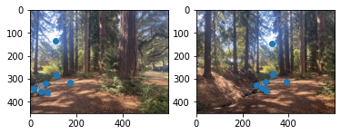 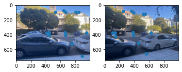 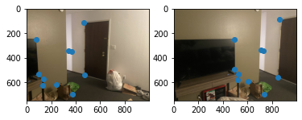For this project, we will be using homographies to perform registration. A homography, H, is a 3x3 matrix with 8 degrees of freedom (H_{3,3} = 1) such that q_i = Hp_i for all i correspondences (p_i, q_i). If we have four correspondence points, we have a well-determined system that can be solved for H. If we have more points, we have an overdetermined system, which we may have no solution. So we can apply least squares to get approximate a homography that solves the system.
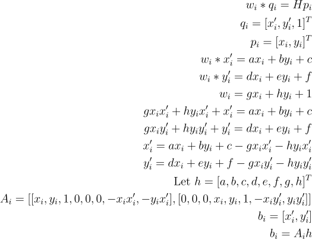Determining a suitable h for the above constraints for all i gives us a homography H which can be used to register images.
Once a homography is found, images can be warped to match the geometry of the reference correspondence points. We can see this in action with image rectification. Consider the two images below of a room with tiled floors. We can use the tiling to generate a homography that will straighten out the tiles and thus transform the image into a top down view of the floor.
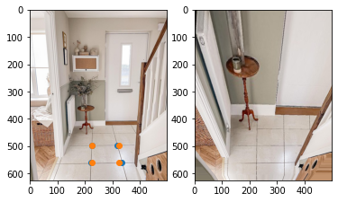 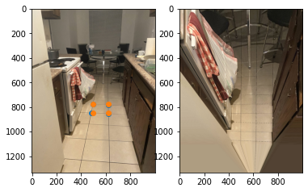We can apply a similar procedure to stitch images together and create a panorama. Given two images, A and B, we can register A to B and then stitch A_to_B with B to generate a panorama of the two. Here are some results:
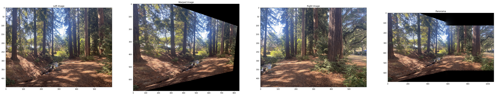 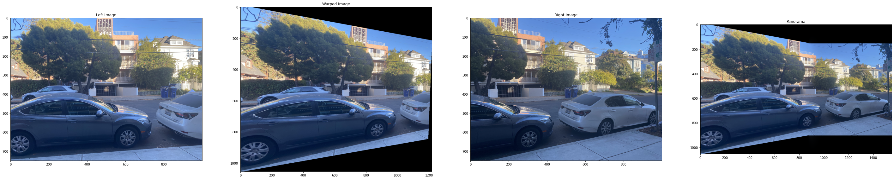 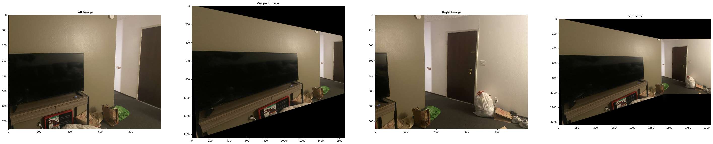The stitching of the registered images is non-trivial. There were two challenges when it came to stitching, the first being positioning the two images together in the same frame and the second being blending the two together. To position the two registered images, I figured out the position of the warped image in the warped space (the same space as the reference image), then shifted everything so that the warped image was in the +,+ quadrant. Then I was able to add the reference image to this space, which correctly positioned the two images relative to each other. Next, I used Laplacian pyramids to blend the two images together. I used pyramids over stacks to improve runtime.
In the second part of this project, I will be automatically defining correspondence points between two input images and then generating mosaics with the same procedure as part A.
Harris corners allow us to detect corners in an image automatically. The key idea behind Harris corners is that given a patch in an image that contains a corner, a shift in any direction would produce a significant change in the patch. If the patch contained an edge or nothing instead of a corner, certain shifts would be nearly identical to the original patch. So a Harris corner is detected by determining points at which such shifts induce significant changes in all directions. This is quantified via a response metric, and only points with relatively large responses are deemed Harris corners. Below is an example of an image overlayed with its Harris corners. Immediately, it is apparent that we have too many points that are densely packed together. We need some way to keep only those points that have large responses while also making sure we have a nice distribution over the image. This is where adaptive non-maximal suppression becomes useful.
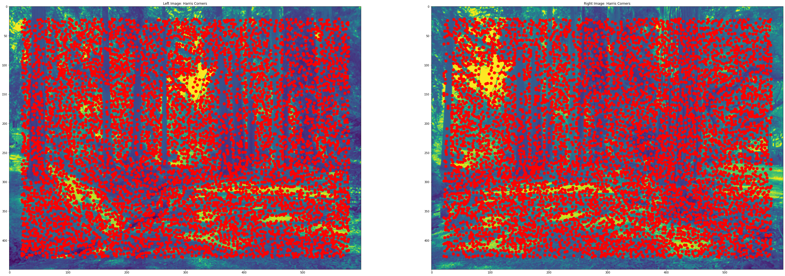ANMS works by figuring out some radius, r, and removing any points that do not have the greatest response within a radius r of itself. The larger this radius, the less points remain. So we can control the number of points by increasing the radius until we reach our desired number of points. In practice, this algorithm leverages some clever observations to improve efficiency. The first observation is that if we decrease the radius, this will only add points to our set, or in other words, no additional points will be suppressed. Therefore, if we start with a large radius and keep decreasing, we just have to check which points are no longer suppressed and add those points to our set. The second observation is that there is a minimum suppression radius for each point. In other words, if we choose a radius any bigger than this, then this point will be suppressed. Using these two observations we can avoid an exhaustive search. Rather, we simply determine the minimum suppression radius for each point, sort the points by their minimum suppression radii in descending order, and then we can choose the top k points as our non-suppressed points. Below are the resulting points.
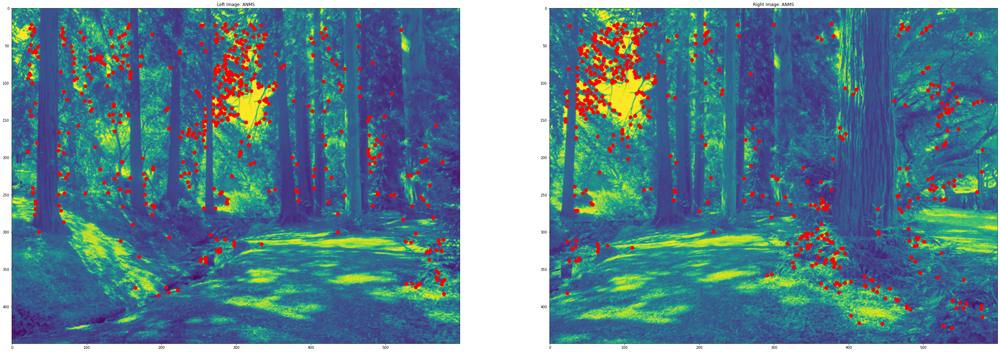The next part of this project is identifying corresponding points. This is accomplished through matching feature descriptors. Essentially what happens is for both images, I extract an 8x8 patch about each corner point and then use the nearest neighbor algorithm to find the best buddies between the two images. Then for each of these pairs, I make sure the ratio of the distances from the nearest neighbor to the second nearest neighbor is below some threshold (0.65). This is a technique known as Lowe Thresholding which helps get rid of poor matches. See below for the results of the best buddy matching and Lowe thresholding.
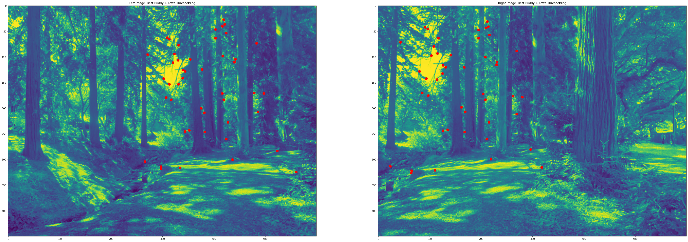Unfortunately, the correspondences from the previous section aren't perfect. Outlier matches will screw up our homography calculation later on, so we need to remove these matches. We can use the RANSAC algorithm to accomplish this. RANSAC randomly samples a set of correspondences and constructs a homography from these points. It then checks how many points out of all our points obey this homography (i.e. the transformed point is within a certain distance of the actual point). The algorithm then deems these points as outliers, and the rest as inliers. After multiple iterations, the algorithm chooses whichever iteration had the most inliers and uses these inliers to compute a homography. In this way, we remove outliers and compute a homography from just the inliers. Below are the inlier points.
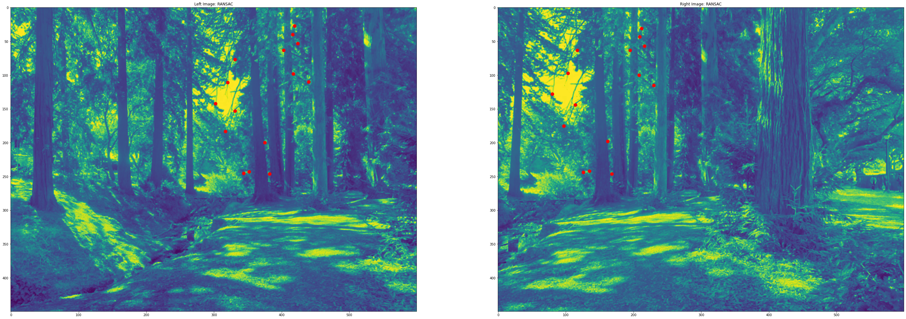Finally, we can combine all the previous parts to automatically create mosaics from two input images. Below are some results of this process.